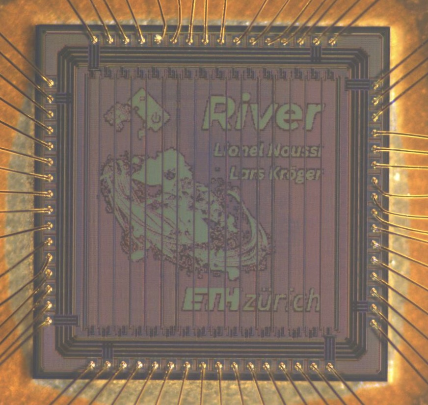
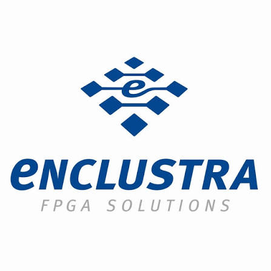

Selected projects
Hardware systems, from architecture and RTL to physical implementation.

From RTL to silicon
A packaged chip from my VLSI work at ETH Zurich, developed using open-source tools, taped out in the IHP 130nm tehcnology node.
Read the report ↗
Ongoing project
Current Work
As part of my master's thesis, I am currently working on a cache-coherent interconnect for a multi-core CVA6 System. This is implemented with the AMBA Coherent Hub Interface
(CHI), and will be released open source by the group upon completion of the project next summer, stay tuned!

Hardware Engineering Intern · Oct. 2025 – Mar. 2026
Enclustra GmbH — Innovation Lab
I developed and validated FPGA/SoC hardware, including platforms
based on AMD Versal devices. I also built Python and Altium tools to
automate schematic and netlist checks as well as component-database
workflows.
FPGA / SoCAMD Versal
PythonAltium
Semester project · ETH Zurich · 2026
NoC Architecture and Link-Width Scaling
How much can wider NoC links improve performance, and should the DMA
data width within each core be decoupled from the NoC data width? I
investigated these questions on Picobello, a 16-core RISC-V SoC, by
varying the DMA and network-on-chip datapath widths.
I developed a parameterized AXI width adapter and a read
interleaver to reduce burst serialization, achieving approximately
twice the baseline performance on memory-bound benchmarks with
1024-bit NoC links. I also evaluated area, timing, and routing
limits in TSMC 7 nm.
As part of the project, I optimized FlashAttention-2 decoding
using bank-aware memory placement and SIMD. I developed a
scaling-and-squaring approximation for Online Softmax that removes
the memory accesses required by a lookup-table implementation. This
made the Softmax computation SIMD-friendly for arbitrary vector
widths while keeping the kernel fully pipelineable, delivering a
17.6× single-cluster compute speedup.
Widening the DMA and NoC datapaths from 512 to 1024 bits provided a
further 1.8× speedup.
SystemVerilogRISC-VAXI / NoC
Fusion CompilerTSMC 7 nm
Read the NoC link-width report in this page
VLSI II project · ETH Zurich
Croc SoC: DMA Engine and SPI Peripheral
From RTL to working silicon: our team extended the Croc RISC-V
SoC and took it through RTL verification, ASIC implementation,
and first-silicon bring-up.
I co-developed a general-purpose DMA engine and a four-mode
SPI controller. Overlapping computation with DMA transfers
improved our graphics demo's performance by 1.75×.
I also wrote the complete RTL-to-GDSII flow using Yosys and
OpenROAD. The DMA supports autonomous memory and peripheral
transfers, while the SPI controller supports all four SPI modes
and clock rates up to 26 MHz. The resulting graphics demo ran
approximately 1.75× faster with DMA.
SystemVerilogRISC-VDMA / SPI
YosysOpenROAD
Read the report in this page